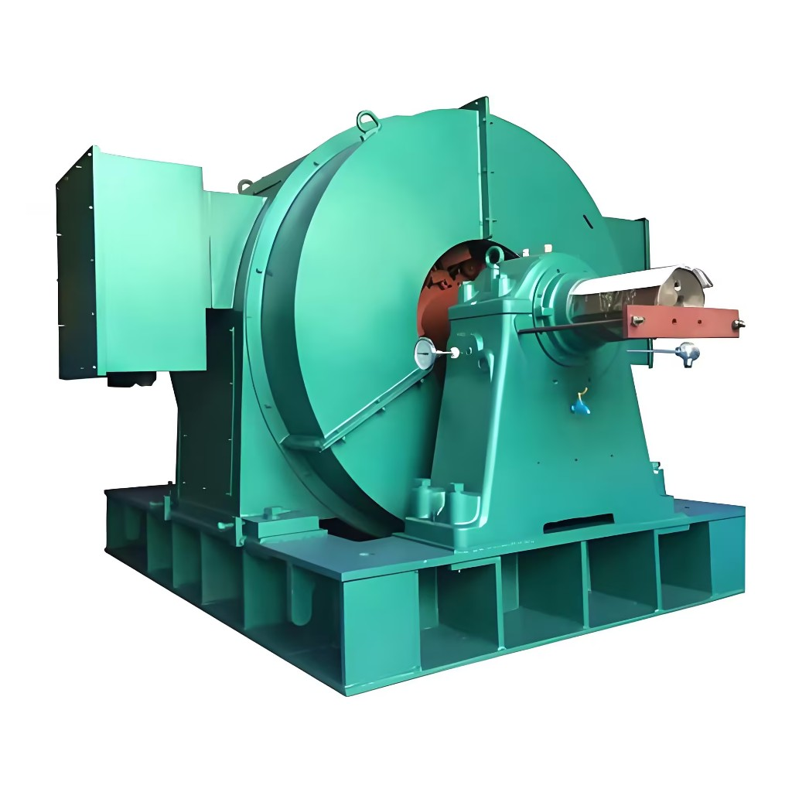

产品型号解析：精准识别电机规格
TDMK系列大型三相同步电动机型号采用标准化命名规则，以TDMK400-32/1250为例进行详细说明：
"TDMK"标识：代表大型三相同步电动机，专为矿山磨机设计
"400"数字：表示电动机的机座号或规格代码
"32"极数：表示电动机的极数为32极
"1250"功率：代表电动机的额定功率为1250kW
该命名体系严格遵循国家GB755《旋转电机基本技术要求》和JB8/DQ3449《TK系列大型三相同步电动机技术条件》，确保用户能够快速准确地识别产品关键参数。
产品技术概述：专业设计满足矿山磨机需求
核心技术特性
TDMK系列大型三相同步电动机采用创新的同步电机设计，额定电压为6000V，也可根据用户要求提供3000V和10000V等级。该系列电机具有堵转转矩大、热容量高、性能可靠、功率因数可调等显著优势，完美适应矿山磨机的特殊工况要求。
强大的环境适应性
本系列电动机适应于在海拔不超过1000m，冷却介质温度不超过40℃，少尘埃、无蒸汽、酸、碱等腐蚀性气体的室内环境中工作。电动机允许全电压直接起动，如用户电网不允许全电压直接起动时，也可采用降压起动。
核心技术优势：卓越性能的坚实保障
优异的启动与运行性能
TDMK系列电动机具有卓越的启动特性，起动转矩大，能够轻松带动矿山磨机负载启动。采用可控硅励磁系统，电动机的功率因数可达到0.9（超前），有效改善电网质量。
创新的结构设计
机座：采用钢板焊接而成，机座下部是电动机的出线端，结构坚固，能够承受矿山设备的振动和冲击。
定子：定子铁芯采用0.5毫米厚的低损耗硅钢薄板冲制的扇形叠成，铁心段间以风道片隔开。绕组采用成型的双迭短距线圈，采用B级绝缘或F级绝缘，温升按B级考核以利于延长使用寿命。
转子：磁极采用钢板冲制而成，与磁极线圈一同装在转子磁轭上，磁极线圈为B级或F级绝缘。
灵活的冷却系统
电动机通风方式为开启式自然通风或可制成全封闭管道通风式，用户可根据实际使用环境选择最适合的冷却方案。
西安西玛电机完善的质量保障体系
企业实力展示
西玛电机（集团）股份有限公司作为中国电机制造业的领军企业，专注于大中型、高低压、交直流电机的研发与制造。公司构建了完整的产业链体系，集电机设计制造、电气控制、机械加工、模具制造、铸造工艺和运输服务于一体，为客户提供全方位的动力系统解决方案。
权威认证与荣誉
质量管理体系：ISO9001质量管理体系认证
环境与安全管理：ISO14000环境管理体系和OHSAS18000职业健康安全管理体系认证
国际产品认证：欧洲"CE"、美国"UL"和中国"CCC"强制性认证
行业地位：中国机械行业500强、电器工业百强企业
产品质量荣誉：质量信誉AAA等级企业、"部省市名牌产品"、"西安市免检产品"、"中华之光名牌产品"等荣誉称号
选型指南与技术参数
标准配置参数
| 参数类别 | 标准规格 |
|---|---|
| 电机型号 | TDMK400-32 |
| 额定功率 | 400kW |
| 额定电压 | 6000V |
| 额定频率 | 50Hz |
| 额定转速 | 187.5r/min |
| 功率因数 | 0.9（超前） |
| 防护等级 | IP00 |
| 冷却方式 | IC01 |
| 绝缘等级 | F级（按B级考核） |
| 安装形式 | IM7311 |
详细技术参数表
根据实际应用需求，TDMK系列提供多种规格选择：
| 型号 | 额定功率(kW) | 额定电压(kV) | 额定转速(r/min) | 功率因数 | 重量(t) |
|---|---|---|---|---|---|
| TDMK350-32 | 350 | 6 | 187.5 | 0.9 | 10.7 |
| TDMK400-32 | 400 | 6 | 187.5 | 0.9 | 11.3 |
| TDMK500-32 | 500 | 10 | 187.5 | 0.9 | 13.7 |
| TDMK630-36 | 630 | 6 | 167 | 0.9 | 13.5 |
| TDMK800-36 | 800 | 6 | 167 | 0.9 | 16.0 |
| TDMK1000-36 | 1000 | 6 | 167 | 0.9 | 16.0 |
| TDMK1250-40 | 1250 | 6 | 150 | 0.9 | 17.7 |
| TDMK1600-36 | 1600 | 6 | 167 | 0.9 | 31.0 |
专业选型建议
应用场景分析
TDMK系列电动机主要适用于传动矿山磨机用的大型交流三相同步电动机，包括：
格子型球磨机
棒磨机
磨煤机
关键选型考虑因素
选择合适的TDMK系列大型三相同步电动机时，建议重点考虑以下因素：
负载特性：包括磨机类型、启动频率、负载惯量及冲击特性
电网条件：电压等级、电网容量限制及功率因数要求
工作环境：环境温度、湿度、海拔高度、粉尘浓度等环境因素
安装空间：安装场地尺寸限制及通风散热条件
维护要求：预期的维护周期和维护便捷性要求
特殊需求注意事项
旋转方向：由集电环端看一般为逆时针，也可根据要求制成顺时针
轴伸负载：电动机和磨机用联轴器联接时，电动机轴伸上不能承受外加的径向或轴向力
出线方式：定子引出线有六个出线头，采用高压橡胶电缆线在机座下部出线夹上引出
订货须知
标准订货信息
请在订购TDMK系列大型三相同步电机时注明以下内容：
电机型号
额定频率
额定功率
额定电压
极数
防护等级
冷却方法
安装型式
旋转方向：[顺时针方向（面对电动机轴伸端看）]
出线盒位置：[电动机右侧（面对电动机轴伸端看）]
特殊订货要求
如有以下特殊要求，请在订货时明确注明：
双轴伸、特殊出线盒位置、转轴逆向旋转
湿热带型或户外防腐型等特殊环境型号
特殊的轴承结构或润滑方式
其他特殊技术参数或配置要求